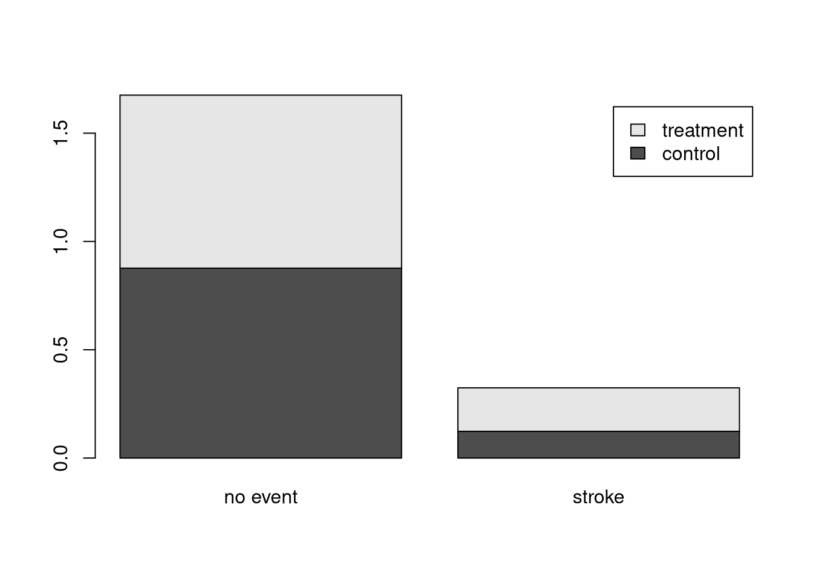

install.packages("openintro")Lección 1: Introducción a los datos
EPDI
Introducción al análisis de datos experimentales mediante tablas de contingencia y proporciones, utilizando R y el paquete openintro.
Resumen
En esta lección se estudia un experimento clínico sobre el uso de stents para prevenir accidentes cerebrovasculares. Se introducen las nociones de variable explicativa y variable respuesta, así como el uso de tablas de contingencia y proporciones. Mediante el entorno R y el paquete openintro se desarrollan procedimientos básicos para organizar y resumir datos. El propósito es iniciar la comprensión del análisis estadístico en contextos descriptivos e inferenciales.


1 Google Colaboratory (Colab)
colab es un servicio alojado de Jupyter Notebook que no requiere configuración y ofrece acceso gratuito a recursos informáticos, como GPU y TPU. Colab es especialmente adecuado para el aprendizaje automático, la ciencia de datos y la educación.
En esta asignatura, lo utilizaremos para representar, graficar y resumir datos que no es posible implementar en otras aplicaciones como Excel u Hojas de Cálculo de Google (al menos sin la fricción propia de éstos).
Pero colab solo es el espacio de trabajo, necesitamos un motor, un lenguaje que compile nuestros datos. Actualmente, existen dos principalmente que permiten desarrollar análisis matemático y/o estadístico: python y R.
Usualmente, un usuario interesado en ejecutar este tipo de programas necesita:
- Un editor
- Un kernel
- Conocer los comandos del lenguaje correspondiente
Con colab contamos con los dos primeros recursos: (1) colab en sí es un editor y (2) Google ofrece por medio de sus servicios distintos kernel, entre ellos python y R. Es cosa de “instalarlos” (en realidad nada se instala en tu computador solo se instalan en el servidor) y luego (3) usar los comandos respectivos para manipular datos -por ejemplo.
2 Tu cuenta institucional
Solo necesitas eso, tu cuenta institucional @colegioportaliano.cl:
- Ingresa en colab
- Presiona el botón “New Notebook”, te advertirá que se requiere el acceso a Google y presionas el botón Acceder.
- Ingresas tus credenciales, posiblemente te solicite que ingreses un segundo nivel de seguridad (mensaje de texto en tu celular, presionar “si” en un celular, etc.)
- Listo ya estás en colab.
3 R
R es un entorno de software libre para computación estadística y gráficos. Se compila y ejecuta en una amplia variedad de plataformas UNIX, Windows y macOS. Este será nuestro kernel por defecto. Y por sus características, versatilidad y amplios usos en ciencias, economía, salud, ingeniería, etc. es alimentado por una gran comunidad que provee paquetes o librerías de dedicación especial. ¿Qué significa esto? Bueno, que usuarios alrededor del mundo han facilitado mucho las cosas para que otros usuarios -como ustedes y yo- podamos utilizar bases de datos originales y actualizadas que junto con la potencia del kernel R nos permiten realizar simulaciones que no podríamos hacer con otros software convencionales (mucha fricción).
Y eso es justamente lo que haremos ahora. Prepárate.
4 Estudio de caso: uso de stent para prevenir ACV (accidente cerebrovascular)
En esta sección, consideraremos un experimento que estudia la eficacia de los stents (también conocido como endoprótesis vascular: una malla o férula diseñada para abrir arterias, venas u otros conductos estrechados o bloqueados) en el tratamiento de pacientes con riesgo de ACV. Los stents son dispositivos que se colocan dentro de los vasos sanguíneos y que facilitan la recuperación del paciente tras un evento cardíaco y reducen el riesgo de sufrir otro ACV o incluso la muerte. Muchos médicos esperaban que se obtuvieran beneficios similares para los pacientes con riesgo de ACV.
Comenzamos por escribir la pregunta principal que los investigadores esperan responder:
¿Reduce el uso de stents el riesgo de un ACV?
4.1 El experimento
Los investigadores que formularon esta pregunta realizaron un experimento con \(451\) pacientes en riesgo.
Cada paciente voluntario fue asignado aleatoriamente a uno de dos grupos:
- Grupo de tratamiento. Los pacientes del grupo de tratamiento recibieron un stent y tratamiento médico. El tratamiento médico incluyó medicamentos, control de los factores de riesgo y ayuda para modificar el estilo de vida.
- Grupo de control. Los pacientes del grupo de control recibieron el mismo tratamiento médico que el grupo de tratamiento, pero no recibieron stents.
Los investigadores asignaron aleatoriamente a \(224\) pacientes al grupo de tratamiento y a \(227\) al grupo de control.
En este estudio, el grupo de control proporciona un punto de referencia para medir el impacto médico de los stents en el grupo de tratamiento.
Los investigadores estudiaron el efecto de los stents en dos momentos: \(30\) días después de la inscripción y \(365\) días después de la inscripción.
4.2 El resumen
Los resultados de 5 pacientes se resumen en la tabla Tabla 1. Los resultados de los pacientes se registran como “stroke” o “no event”, lo que indica si el paciente sufrió o no un ACV al final de un período.
| Patient | Group | 0–30 days | 0–365 days |
|---|---|---|---|
| 1 | treatment | no event | no event |
| 2 | treatment | stroke | stroke |
| 3 | treatment | no event | no event |
| ⋮ | ⋮ | ⋮ | ⋮ |
| 450 | control | no event | no event |
| 451 | control | no event | no event |
4.3 Primer problema
Considerar los datos de cada paciente individualmente sería un proceso largo y engorroso para responder a la pregunta de investigación original.
En cambio, realizar un análisis estadístico de datos nos permite considerar todos los datos a la vez.
Aquí entra R.
Existe una librería llamada “openintro” que a su vez es la creadora de muchas bases de datos, entre ellas stent30 y stent365, para usarlas debemos primero, instalar la librería:
Presiona Shift+Enter dentro de esta celda (usualmente al final del texto):
Podrás ver cómo colab instala la librería y sus componentes e incluso algunas otras cosas que necesita para su funcionamiento (dependencias). Puede durar desde algunos pocos segundos hasta un minuto aproximadamente. No hagas nada, solo espera que termine.
Ya instalada la librería, debemos invocarla:
library(openintro)Cargando paquete requerido: airportsCargando paquete requerido: cherryblossomCargando paquete requerido: usdataListo, librería activa. No se observa nada.
Para inspeccionar qué contiene esta librería usamos el comando data():
data(package = "openintro")Se desplegará un menú vertical a la derecha con todos los conjuntos de datos del paquete “openintro” y su descripción. Si navegas podrás ver a stent30 y a stent365.
Ahora carguemos nuestras bases de datos de estudio, recuerda que son de la librería openintro. Usamos data() nuevamente:
data(stent30,stent365)Un comando útil en estos momentos es ls(), éste lista el contenido cargado:
ls()[1] "stent30" "stent365"Podrás ver la salida: 'stent30' y 'stent365'
Ahora queremos saber qué estructura tiene el archivo, pues aún no lo vemos. Para ello usamos str():
print(str(stent365))tibble [451 × 2] (S3: tbl_df/tbl/data.frame)
$ group : Factor w/ 2 levels "control","treatment": 2 2 2 2 2 2 2 2 2 2 ...
$ outcome: Factor w/ 2 levels "no event","stroke": 2 2 2 2 2 2 2 2 2 2 ...
NULLInterpretación: se trata de una tabla de dos factores, cada uno con dos niveles.
¿Podrías decir cuáles son cada uno?
También podemos usar el comando head() que nos muestra el encabezado de la tabla:
head(stent365)# A tibble: 6 × 2
group outcome
<fct> <fct>
1 treatment stroke
2 treatment stroke
3 treatment stroke
4 treatment stroke
5 treatment stroke
6 treatment stroke ¿Cómo interpretas lo anterior?
Justo en este momento sería bueno que ejecutaras el siguiente comando que te permitirá conocer finalmente la base de datos stent365:
write.csv(stent30, "stent30.csv", row.names = FALSE)
write.csv(stent365, "stent365.csv", row.names = FALSE)
list.files(pattern = "^stent(30|365)\\.csv$")[1] "stent30.csv" "stent365.csv"Ahora ve al panel de la izquierda y abre el penúltimo ícono Archivos, actualiza y verás dos nuevos archivos para descargar. ¿Te diste cuenta? Es simplemente un archivo csv (comma separated values) de valores separados por coma, que leídos por esta hoja de cálculo corresponden simplemente a dos columnas de datos.
Por las características de los datos (estructura, encabezados, extensión), a veces es imposible usar hojas de cálculo para su lectura. Eso es justamente lo que estamos haciendo aquí. Como ambas variables son categóricas, el resumen natural es una tabla de contingencia (doble entrada).
Para una tabla de contingencia usamos el comando table() de esta forma:
tab_stent365 <- table(stent365$group, stent365$outcome)
tab_stent365
no event stroke
control 199 28
treatment 179 45Con la primera linea estamos pidiendo a R que use el comando table() para agrupar tanto por group como por outcome. Con la segunda linea, le pedimos que muestre dicha tabla.
Intenta hacer algunos simples cálculos aritméticos y te sorprenderás…
Ahora haremos algo más matemático y desde el punto de vista estadístico muy importante. Introduciremos la probabilidad, en este contexto: la proporción de pacientes según el grupo y el nivel.
Para ello usamos el comando prop.table() de esta forma:
prop.table(tab_stent365, margin = 1)
no event stroke
control 0.8766520 0.1233480
treatment 0.7991071 0.2008929Esta vez no copiaré el resultado porque ya te has dado cuenta de que son exactamente las salidas de los comandos que he ido proponiéndote.
A partir de tabla, ¿Qué estás observando? ¿Cómo lo interpretas? ¿Podrías hacer una conclusión? ¿Podrías responder a la pregunta inicial?
Para ayudar a tus conclusiones, siempre es bueno una perspectiva visual de la problemática. Para ello usamos el comando barplot() de esta forma:
barplot(prop.table(tab_stent365, 1),
beside = FALSE,
legend = TRUE
)
¿Te atreves ahora a responder a la pregunta inicial? Escribe tu respuesta en tu cuaderno y compártela cuando se te solicite.
5 Cuestionario
Explica con tus palabras cuál era la pregunta de investigación y por qué los médicos necesitaban un experimento para responderla, en lugar de confiar solo en su intuición.
Identifica la variable explicativa y la variable respuesta del estudio. ¿Por qué la primera se llama “explicativa” y la segunda “respuesta”?
¿Qué problema resuelve la asignación aleatoria de los pacientes a los grupos? ¿Qué podría haber pasado si los médicos hubieran decidido qué paciente recibe stent y cuál no?
Sin un grupo de control, ¿podríamos saber si los stents realmente causaron alguna diferencia? Explica por qué.
Clasifica las variables
groupyoutcomesegún su naturaleza (cuantitativas discretas, continuas, categóricas nominales u ordinales). Justifica cada clasificación.¿Por qué estos datos se resumen naturalmente en una tabla de contingencia y no, por ejemplo, en un promedio o una mediana?
Con los datos del estudio (224 tratamiento, 45 ACV; 227 control, 28 ACV):
- Calcula la proporción de ACV en cada grupo.
- Calcula la diferencia entre ambas proporciones.
- A la luz de estos números, ¿dirías que los stents reducen el riesgo de ACV? ¿Por qué?
La diferencia que calculaste, ¿podría deberse simplemente al azar? Explica usando un ejemplo simple, como lanzar una moneda.
Si el estudio hubiera tenido muchos menos pacientes, ¿confiarías más o menos en el resultado? ¿Por qué?
Los pacientes fueron voluntarios. ¿Podemos estar seguros de que estos resultados se aplican a todos los pacientes con riesgo de ACV? Explica.
El estudio encontró “evidencia convincente de daño” en lugar de beneficio. ¿Qué significa esta frase en el contexto de los stents?
Calcula la razón de proporciones (tratamiento / control). Un valor mayor que 1 indica mayor riesgo en el grupo tratamiento. ¿Qué obtuviste? Interprétalo.
Si el stent realmente redujera el riesgo de ACV, ¿qué esperarías ver en las proporciones y en la razón que calculaste?
Menciona dos limitaciones del estudio que podrían afectar la confianza en sus conclusiones.
¿Qué enseñanza deja este caso sobre la relación entre la intuición médica y la evidencia estadística? Escribe una reflexión breve.